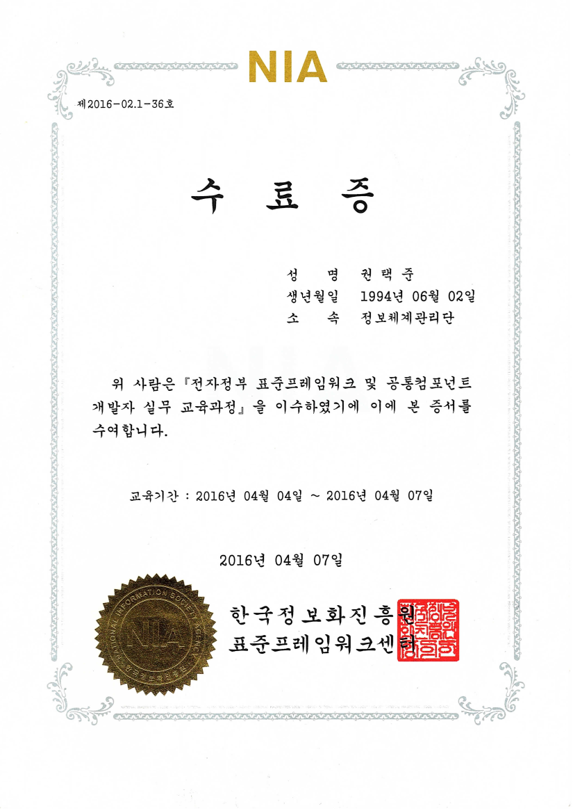

육군본부 정보체계관리단전산체계개발과프로그램 작성병
인트라넷 웹 체계 유지보수 업무
개발 환경
- Eclipse(IDE)
- Apache Tomcat(WAS)
- Informix(Database)
역할
- 국방망을 통해 운영되는 웹 체계의 유지보수를 담당
- 소요 제기 담당자와의 의사 소통을 통해 프로젝트의 요구 사항을 파악 후 기능 개선
- 타 개발자가 작성한 코드를 분석 후 수정 및 보일러플레이트 코드 리팩토링
핵심 기술
- HTML, CSS를 사용하여 웹 페이지 구조 설계 및 레이아웃 조정
- JQuery를 활용하여 DOM 조작, 이벤트 처리, AJAX
- JSP 동적 웹 페이지 작성
- 데이터베이스 연결 및 SQL 쿼리 작성
전자정부 표준프레임워크 개발자 과정
교육 내용
- 전자정부 표준프레임워크를 활용한 웹 애플리케이션 개발 실습
주요 학습 내용
- Maven을 활용한 의존성 관리 및 자동 빌드
- Spring 기반의 MVC 아키텍처 설계 및 구현
- iBatis를 이용한 데이터베이스 연동 및 SQL 맵핑 활용
-
